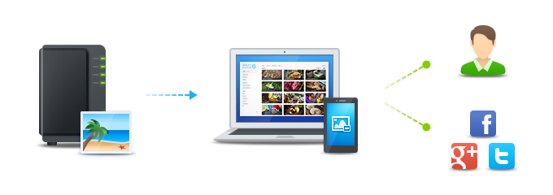
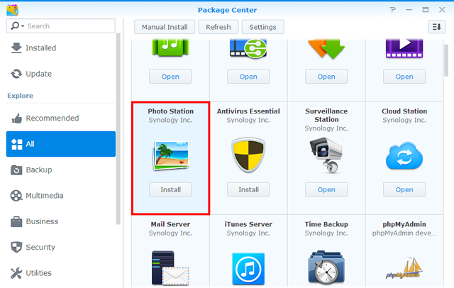
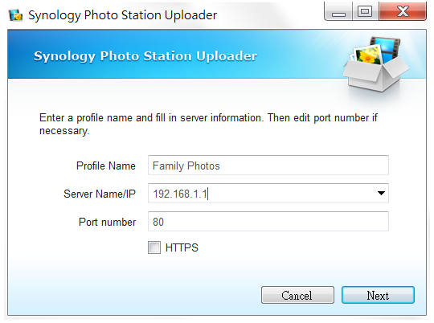
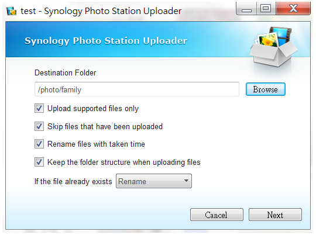
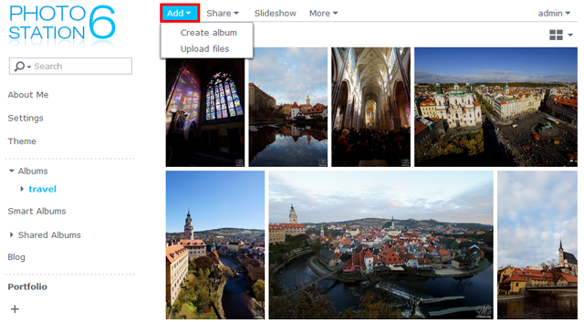
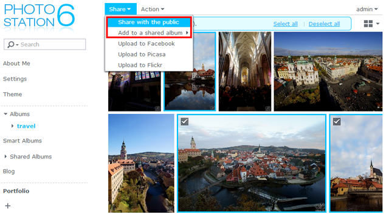
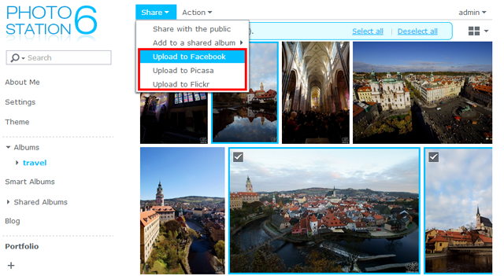
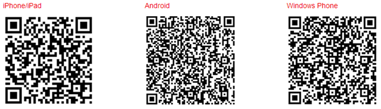

Überblick
Photo Station ist eine webbasierte Anwendung, mit der Sie die auf Ihrem Synology NAS gespeicherten Fotos über das Internet organisieren und anzeigen können. Über die vielseitige und benutzerfreundliche Oberfläche von Photo Station können Sie Ihre Fotoalben mit nur wenigen einfachen Klicks hochladen, durchsuchen, verwalten und freigeben.
1. Photo Station installieren
Um Photo Station zu installieren, gehen Sie zu Paketzentrum, suchen Sie Photo Station und klicken Sie auf Installieren.

2. Fotos hochladen
Bevor Sie Fotos in Photo Station durchsuchen und verwalten können, müssen Sie Alben erstellen und Fotos auf eine der folgenden Weisen hochladen.
2.1 Fotos hochladen mittels Synology Photo Station Uploader (für Windows and Mac)
Wir empfehlen, Synology Photo Station Uploader zu verwenden, weil während des Hochladens Miniaturansichten aller Fotos erstellt werden. Beim Hochladen der Bilddateien mit dem Synology Photo Station Uploader wird die Rechenkapazität Ihres Computers genutzt, um die Umwandlung zu beschleunigen.
- Laden Sie den Synology Photo Station Uploader herunter (verfügbar im Synology Download-Zentrum) und installieren Sie ihn.
- Klicken sie auf Ihrem Computer mit der rechten Maustaste auf Fotos, die Sie hochladen möchten, und wählen Sie Zu Photo Station hochladen > Neues Profil erstellen aus, um den Assistenten zu öffnen.
- Geben Sie einen Namen für das neue Profil und Servernamen/IP-Adresse des Synology NAS, das als Ziel dient, ein.

Anmerkung:
Die eingegebenen Serverinformationen und Anmeldedaten werden für spätere Zwecke in diesem Profil gespeichert. Sie können mehrere Profile für unterschiedliche Regeln oder Ziele einrichten. Anstatt bei der nächsten Benutzung des Synology Photo Station Uploaders erneut die Serverdaten einzugeben, können Sie auch ein vorhandenes Profil auswählen und damit Fotos zum selben Ziel hochladen.
- Wählen Sie aus, ob Sie die Dateien zu Photo Station oder zur persönlichen Photo Station hochladen möchten.
- Geben Sie die Anmeldedaten für das als Ziel dienende Synology NAS ein.
- Klicken Sie auf Durchsuchen, um einen Zielordner auszuwählen, oder erstellen Sie einen Unterordner unter dem freigegebenen Ordner photo.

- Nachdem der Upload abgeschlossen wurde, können Sie Photo Station auf Ihrem Synology NAS starten und die hochgeladenen Dateien auf verschiedene Weisen anzeigen oder Informationen wir Eigenschaften von Alben und Zugriffsberechtigungen bearbeiten.
2.2 Mittels Photo Station Alben erstellen und Fotos hochladen
Starten Sie Photo Station und klicken Sie auf Hinzufügen, um ein neues Album zu erstellen oder Fotos von Ihrem Computer zu vorhandenen Alben auf dem Synology NAS hinzuzufügen.

Anmerkung:
Wenn Sie Fotos lieber über Photo Station hochladen möchten, empfehlen wir dringend, QuickConnect zu aktivieren. Egal ob zu Hause oder unterwegs, mit QuickConnect können Sie mit einer benutzerdefinierten ID von überall aus über das Internet auf Ihr Synology NAS und Photo Station zugreifen, ohne komplizierte Netzwerkkonfigurationen wie Portweiterleitungsregeln vornehmen zu müssen. Weitere Informationen zu QuickConnect finden Sie in dieser Anleitung.
3. Fotos teilen
Mit der Freigabefunktion können Sie Ihre in Photo Station gespeicherten Fotos ganz einfach mit Freunden teilen oder auf beliebte soziale Netzwerke wie Facebook, Picasa und Flickr hochladen.
3.1 Fotos mit anderen teilen
- Gehen Sie zu einem Album und wählen Sie die Bilder aus, die Sie freigeben möchten.
- Klicken Sie auf Freigabe > Für die Öffentlichkeit freigeben, um einen entsprechenden Link zu erhalten.
- Wenn Sie nur ein einzelnes Foto zur Freigabe ausgewählt haben, wird es zum freigegebenem Standardalbum namens Freigegebene Fotos hinzugefügt. Dort können Sie alle Fotos verwalten, die Sie einzeln freigegeben haben.
- Wenn Sie mehrere Fotos zur Freigabe ausgewählt haben, werden diese in einem neuen freigegebenen Album gruppiert.
- Alternativ können Sie auch auf Freigabe > Zu einem freigegebenen Album hinzufügen klicken, um die ausgewählten Fotos zu einem vorhandenen freigegebenen Album hinzuzufügen.

- Geben Sie bei Bedarf den Namen des neuen freigegebenen Albums und dessen Gültigkeitsdauer ein.
- Kopieren Sie einfach den Link in E-Mails, Nachrichten und Webseiten, um die ausgewählten Fotos mit anderen zu teilen.
Anmerkung:
- Die freigegebenen Fotos sind für alle zugänglich, die den Link erhalten haben.
- Unter Einstellungen > Freigabe können Sie festlegen, welche Benutzer die Berechtigung haben sollen, Elemente aus Photo Station öffentlich freizugeben.
3.2 Fotos in soziale Netzwerke hochladen
- Wählen Sie die hochzuladenden Fotos aus und gehen Sie zu Freigabe > Zu [Soziale Netzwerk-Websites] hochladen.

- Klicken Sie im daraufhin angezeigten Fenster auf Mit [sozialen Netzwerkseiten] verbinden und führen Sie die Autorisierung mit Ihrem sozialen Netzwerkkonto durch. Sie können die Fotos in ein bestehendes oder ein neues Album hochladen.
4. Fotos auf Mobilgeräten organisieren und durchsuchen
Installieren Sie mit den folgenden QR-Codes DS photo auf Ihren Mobilgeräten, um sich damit mit Photo Station zu verbinden oder Fotos hochzuladen.
